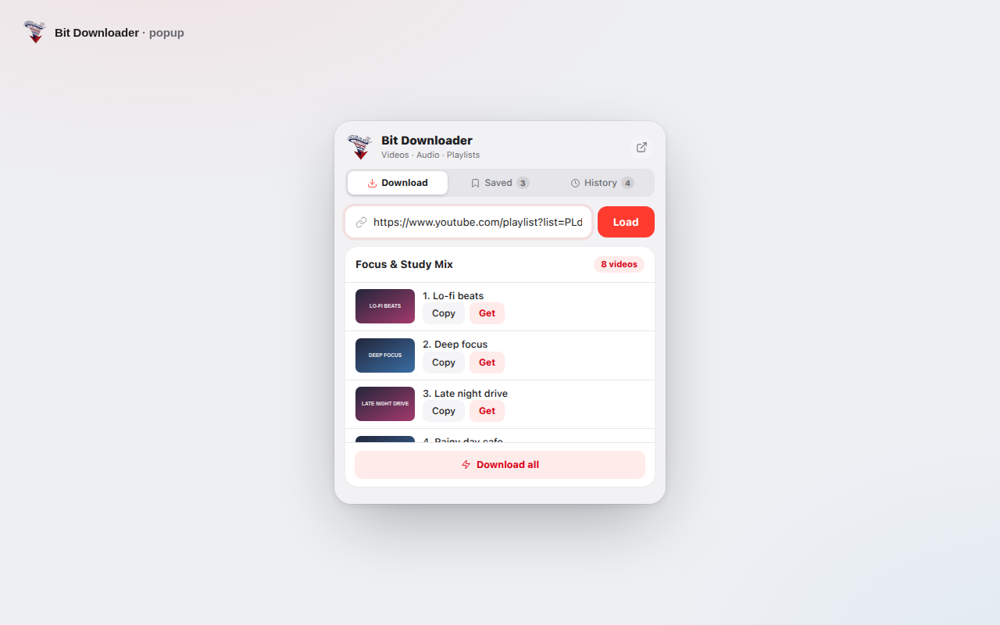

Bit Downloader is a small, pretty browser extension that saves YouTube videos, turns them into MP3s and collects whole playlists — quietly, on your own machine.
Because the Chrome Web Store doesn't allow YouTube downloaders, Bit Downloader is released straight from GitHub. It takes about a minute — and stays exactly as easy to update.
Download bit-downloader-v1.0.1.zip from the button below and unzip it anywhere.
Open chrome://extensions and switch Developer mode on in the top corner.
Hit Load unpacked, pick the unzipped folder — and pin Bit Downloader to your toolbar.
No ads, no pop-overs, no account nagging. Just quiet tools that behave like they were designed for you.
1080p, 4K, or a light 360p copy — pick the exact format that fits your device and your data.
HDOne click converts any video to MP3 with FFmpeg compiled to WebAssembly. The audio is carved on your own chip — it never travels to a server, ever.
♪Drop a playlist link and take the entire list — one by one, or batched quietly in the background.
See something you want to keep? Bookmark it, and Bit Downloader holds it on your Saved shelf — thumbnails, durations, everything — until you're ready.
✦Every download is remembered — format, time, everything — so you can revisit or tidy up anytime.
No servers. No analytics. No account. Bit Downloader talks only to the endpoints that serve the video you asked for, and keeps its little notebook in your browser's own storage.
A flat, calm interface in the popup — grouped cards, a tidy segmented control, and typography that stays out of your way.

This is the actual popup, running on sample data right here in your tab. Nothing downloads — promise.
Tip: flip between the views above. In the Video view, type any URL and press Load — the demo answers with a sample video so you can feel the whole flow. MP3, playlist and batch buttons are all wired up for show.